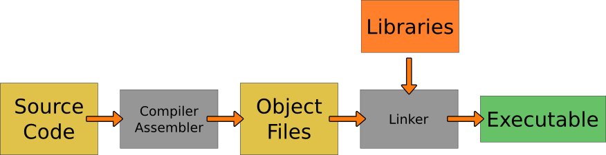

Research School of Engineering
ENGN8537: Embedded Systems and Real Time Digital Signal Processing
It is a truth universally acknowledged, that a single man in possession of a good fortune must be in want of
Embedded Systems
Software Interfaces
Operating Environment
- Operating System
- Libraries
- Runtime
Must consider size, complexity, driver availability etc
Very Important
We will have a whole module later in the course.
Memory Requirements
- RAM/Flash usage
- Volatility requirements
- Speed/Latency requirements
Will be covered in more depth in the sequel
L1 Cache
L2 Cache
L3…
RAM
Flash
Hard Drive
Network/Cloud
- Fast access (cycles)
- Tight coupling
- Small capacity (MB)
- Implemented as RAM
Most modern CPUs keep recently-accessed data cached in a small amount of memory tightly coupled to the CPU itself. Code rarely controls the cache itself, but can be optimized for good cache performance. L1 Cache is typically accessed in 1-2 CPU cycles while lower level caches are proportionally slower.
In multi-core chips, the lower levels of cache may be shared between cores. This increases
complexity somewhat as the cache has to remain ‘coherent’ across all cores; that is, because cache
data is a copy of RAM data, it exists in at least two places at one and every core must ensure it
accesses the most recent copy.
- Static or Dynamic
- Medium capacity (GB)
- Medium access (100's of cycles)
RAM is what we typically think of when we think of memory. In an Embedded System, some base amount is required for program variables and the rest may be used for buffering, trading off cost against throughput.
Larger RAM devices (such as Dynamic RAM) require code to execute in order to be initialized.
This causes a “chicken and egg” problem; code needs RAM to execute, but the RAM needs some code to have executed. If a device is designed to use Dynamic RAM, it will typically also include a small amount of Static RAM internal to the device for the sole purpose of supporting this initial execution.
- Non-volatile
- Large capacity (10s/100s of GB)
- Slow access (1000's of cycles)
- Finite lifetime
Flash memory is slowly replacing hard drives as the standard for local, non-volatile memory. It is typically a few orders of magnitude slower than RAM and several orders of magnitude slower than a CPU cache. Flash can only be written a finite number of times before it wears out, so much of the technology behind dealing with this type of memory goes in to avoiding, detecting and/or correcting errors. Premium flash devices include Error Correcting Codes, ECC, which are special portions of memory that contain enough information to not just detect, but even fix 1, 2 or several-bit errors.
Wear Levelling
Flash lifetime is extended by
wear levelling. The algorithm chosen dramatically affects device lifetime.
Modern flash memory cards such as SD cards may cheat with their wear leveling algorithms. The FAT filesystem that is typically used on such cards writes data across the card in something approaching a round-robin fashion – in essence it does its own wear leveling. The exception to this is the File Allocation Table block which is written every time any other piece of the card is written.
Given that the FAT gets written many more times than any other piece, the memory may choose to only wear level the section of the card where it thinks the FAT will sit. This means that using a filesystem other than FAT on an SD card may reduce its lifespan 10s or 100s of times!
- Non-volatile
- Very Large capacity (1000s of GB)
- Very Slow access (10,000's of cycles)
- Non-deterministic access times
Hard Drives, or magnetic storage generally, have been around almost as long as computers themselves. They are still the de-facto standard for high volume, non-volatile storage. They are not often used in Embedded Systems as they are relatively power-hungry and fragile, at least when they are spinning. They also have non-deterministic response time as the magnetic heads need to physically move over the surface of the disk with each new request.
- High Reliability
- Very Large capacity (+1000s of GB)
- Very Slow access (1,000,000 cycles)
- Non-deterministic access times
Network storage is becoming more fashionable as markets become less about the Embedded Device itself and more about the service it can offer. Having the service state data live externally to the system itself streamlines upgrades and can drive down system costs by centralizing much more of the system than would traditionally be the case.
Network storage has the obvious drawbacks though – the network is a weak link, both in terms of uptime and reliability, but also in terms of security.
Programming Language
- Library/Driver availability
- Runtime support
The choice of programming language(s) is perhaps the most fundamental software architecture choice. A balance must be struck between features, efficiency, reliability, time to market etc.
One of the key points that distinguishes programming languages from each other are whether they are precompiled, Just-in-Time compiled or Interpreted. These three options place restrictions on the locations in which a language may be used and what may be accomplished with code written in that language.
Compiled

Precompiled code is typical of programming languages such as C, C++, ADA etc. Precompiled code doesn’t incur run-time overhead translating the programmer’s wishes to actions, however it offers less flexibility than other options.
Compiler: Source Code to Assembly
Assembler: Assembly to Binary. Does not resolve symbols.
Compiler and Assembler are specific to a particular platform.
The compiler takes source code and generates machine language assembly mnemonics (written instructions such as MOV, ADD). The assembler takes this assembly, along with any that has been manually written and generates the binary object files. References to memory locations remain in symbolic form – the object file doesn’t yet know where in memory everything is going to end up.
The compiler and assembler are typically invoked with a single instruction, the intermediate assembly mnemonics are stored in a temporary file and removed upon successful generation of the object file.
The compiler is responsible for most optimizations and generation of platform-specific code. When choosing hardware, it must be selected to be compatible with the target compiler.
Linker: Object Files to Executable
Resolves symbols between object files and libraries.
The Linker combines multiple object files (typically one per source file) along with external libraries, joins them all together in a single executable then goes through and resolves all symbols. Symbol resolution is the process of going through the executable, finding instructions that reference memory (load, store, function calls etc.) and inserting the correct memory location in to the instruction.
Static Libraries: Function code is “cut & paste” in to the final executable.
Dynamic Libraries: Function code is kept separate and loaded at run-time.
Statically linked binaries are faster to load and require no external files on the target. Dynamically linked libraries are smaller and allow libraries to be shared.
If static libraries are used, all symbols in the executable are resolved and no other item is required for that binary to be executed. This is typically the case for Embedded Systems.
Dynamic libraries (DLLs in Windows-speak, SOs in Linux) have their symbols left unresolved at Link time. The final memory locations for shared symbols are only resolved when the executable is run. This increases start up times but sharing code between executables can reduce overall size.
Dynamic Linker Example
#include "stdio.h"
int main(int argc, char** argv)
{
printf("Hello World");
return 0;
}
What's in stdio.h
+: grep printf /usr/include/stdio.h
extern int fprintf (FILE *__restrict __stream,
extern int printf (const char *__restrict __format, ...);
extern int sprintf (char *__restrict __s,
extern int vfprintf (FILE *__restrict __s, const char *__restrict __format,
extern int vprintf (const char *__restrict __format, _G_va_list __arg);
…
Not code, just a definition
Symbols in the Binary
+~: readelf -s
Symbol table '.dynsym' contains 4 entries:
Num: Value Size Type Bind Vis Ndx Name
0: 0000000000000000 0 NOTYPE LOCAL DEFAULT UND
1: 0000000000000000 0 FUNC GLOBAL DEFAULT UND printf@GLIBC_2.2.5 (2)
2: 0000000000000000 0 FUNC GLOBAL DEFAULT UND __libc_start_main@GLIBC_2.2.5 (2)
3: 0000000000000000 0 NOTYPE WEAK DEFAULT UND __gmon_start__
printf is undefined and has no address
Symbols in the Library
+~/dev/scratch: readelf -s /lib/x86_64-linux-gnu/libc.so.6 | grep printf
…
596: 00000000000546b0 161 FUNC GLOBAL DEFAULT 12 printf@@GLIBC_2.2.5
…
printf is a global symbol with an address here.
Running the binary will cause the library to be dynamically loaded and the address of printf will be filled in.
JIT/Intepretted

Just-in-time (JIT) compiled code has two processes, one on done before-hand and one done while the program runs. The intermediate representation is called “Byte Code”
Compiler: Source Code to “virtual” Assembly (Bytecode)
Bytecode is like assembly, but not tied to a particular architecture.
Bytecode can be run on multiple machines/architectures. It can't run by itself though, it requires runtime support on the target machine.
JIT: Compiles the BC to the platform's Assembly then executes it directly
Interpretted: Parses the BC to find what action to perform, then calls a function to perform the operation.
JIT
- Slow Compilation
- Fast Execution
- Good Optimization
- JIT hard to port
The JIT paradigm adds some overhead to the runtime process as the translation from byte code to machine instructions has to be done before the instruction can actually be executed. This sounds like it would take a lot of overhead, but modern JIT compilers might add just a few percent to the execution time. JIT code means that optimization and generation of platform-specific codes are left to the platform itself, the same byte code can then be run on multiple machines. If your Embedded System and your development machine use different architectures, you can still run a single lot of code on both.
The platform itself is also usually in the best position to determine which optimizations to apply, so the overhead of JIT compilation may be reclaimed through smart application of code optimization.
Interpretted
- Fast Parse
- Slow Execution
- Some Optimization
- VM easy to port
Interpreted code has the same portability advantages as JIT code but because the code is run in a completely controlled and isolated fashion (inside a Virtual Machine), there is the possibility for increased security.
JIT compilers are widely recognized as the future of this kind of technology and are slowly replacing run-time interpreters. One exception is on obscure architectures as Virtual Machines are typically written entirely in C and can be compiled for anything supported by that compiler. JIT compilers have to be written, at least partially, specifically for a target architecture as it has to know which machine instructions to output.
Languages
Compiled
Older Languages, low-level code
JIT/Interpretted
New Languages, portability required.
Precompiled languages: C, C++, ADA etc. Typically older, more established languages but still very commonly used in Embedded Systems.
Much low-level code such as the Linux Kernel are written in precompiled languages as there isn’t necessarily any platform upon which the JIT compiler or Virtual Machine can run.
JIT languages: Java, .NET, Dalvik since Android 2.2, Python, Javascript in some browsers. Most modern languages were either designed to be interpreted but have subsequently had JIT compilers written, or were designed for JIT execution from the start.
Interpreted languages: Typically older versions of the JIT languages above.
Speed and Latency
Speed and Latency are often confused. They are related, but must be specified, and examined, separately
Embedded Systems always have inputs and outputs. Inputs are things such as events to respond to, data to process etc.
Outputs are the event responses, processed data etc.
Latency
- Absolute values
- Maximum latency
- Guaranteed throughput
- …
Speed
- Average values
- Results per second
- Responses per second
- …
Speed in an Embedded System can mean a number of things. In this course, speed will be used primarily as a reference to throughput. That is, “Instructions per second”, “event responses per second” etc.
Responsiveness is related to Real Time concepts as will be presented in a few lectures time. Low latency response, or rather bounded latency response, is a key aspect of all Embedded Systems. We will assume that any reference to latency is in fact guaranteed or bounded latency; average latency will be referred to in terms of throughput.
Arbitrate for Speed
- Low overhead
- Fair scheduling
- Target high utilization
The most common architectural change to improve speed is to change the management of resources. These might be processor cycles, buffer memory, access to hardware accelerators and so on.
To optimize for speed, the arbiter itself must not take too many resources to run. All tasks are expected to get some access to resources, though the access may be divided differently depending on task priorities. The resources should never be left unused if possible.
Arbitrate for Latency
- Deterministic overhead
- Biased scheduling
- Reserved resources
Responsiveness is improved by similar means to speed, but with different goals. Rather than increasing the number of available CPU cycles, one might increase the number of CPU Cycles reserved for the particular task.
The overhead need not be low so long as it's predictable. The scheduling can be biased towards high priority tasks if that's what it takes to meet the required guarantees. The resource can be left unused for a period just in case a high priority event arrives at a particular time.